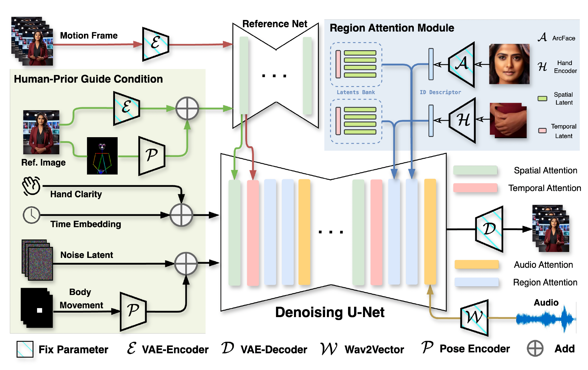

Note: since this page contains many videos, please wait patiently for page loading.
Diffusion-based video generation technology has advanced significantly, catalyzing a proliferation of research in human animation. While breakthroughs have been made in driving human animation through various modalities for portraits, most of current solutions for human body animation still focus on video-driven methods, leaving audio-driven taking body generation relatively underexplored. In this paper, we introduce CyberHost, a one-stage audio-driven talking body generation framework that addresses common synthesis degradations in half-body animation, including hand integrity, identity consistency, and natural motion. CyberHost's key designs are twofold. Firstly, the Region Attention Module (RAM) maintains a set of learnable, implicit, identity-agnostic latent features and combines them with identity-specific local visual features to enhance the synthesis of critical local regions. Secondly, the Human-Prior-Guided Conditions introduce more human structural priors into the model, reducing uncertainty in generated motion patterns and thereby improving the stability of the generated videos. To our knowledge, CyberHost is the first one-stage audio-driven human diffusion model capable of zero-shot video generation for the human body. Extensive experiments demonstrate that CyberHost surpasses previous works in both quantitative and qualitative aspects. CyberHost can also be extended to video-driven and audio-video hybrid-driven scenarios, achieving similarly satisfactory results.

CyberHost employs a dual U-Net architecture as its foundational structure and utilizes the motion frame strategy for temporal continuation, establishing a baseline for audio-driven talking body generation.
Based on the baseline, to enhance the modeling capability for the key human region, i.e., hands and faces, we adapt the proposed Region Attention Modules (RAM) to both the facial and hand regions and insert them into multiple stages of the Denoising U-Net. The RAM consists of two parts: a spatio-temporal latents bank to learn shared local structural details and an identity descriptor to supplement ID-specific texture details.
To reduce the uncertainty in half-body animation driven solely by audio, several improvements have been implemented: (1) The body movement map is employed to stabilize the root movements of the body. It is encoded and merged with the noised latent, serving as the input for the denoising U-Net. (2) The hand clarity score is designed to prevent hand prediction degradation caused by motion blur in the training data. It is incorporated as a residual into the time embedding. (3) The pose encoder encodes the reference skeleton map, which is then integrated into the reference latent, yielding a pose-aligned reference feature.
CyberHost achieves zero-shot human animation on open-set test images in audio-driven settings.